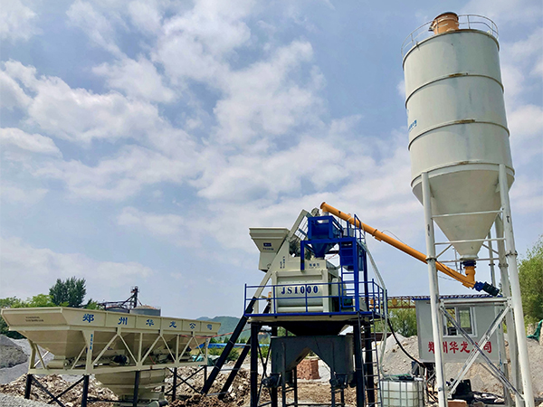

120m³/h concrete production solution for commercial and infrastructure projects. Proven design - delivered and operating in Inner Mongolia since April 2026.
Representative photo of YUDA HZS series concrete batching plant. Actual configuration may vary according to customer requirements.

The HZS series concrete batching plants are high-efficiency forced mixing systems designed for producing various types of concrete, including plastic concrete and dry-hard concrete. They are widely used in commercial concrete production, large and medium-scale construction projects, road and bridge engineering, and precast concrete manufacturing. With reliable mixing performance, accurate measurement and automatic control technology, HZS plants provide stable concrete production solutions for global construction projects.
| Model | HZS120 |
| Theoretical Capacity | 120 m³/h |
| Mixer Model | JS2000 Twin-Shaft Forced Mixer |
| Mixer Power | 55KW x 2 |
| Rated Feeding Capacity | 3200L |
| Rated Discharging Capacity | 2000L |
| Production Cycle | 40s |
| Control System | PLC Fully Automatic |
| Weighing Accuracy | ±1% |
| Discharge Height | 3.8m / Customizable |
JS series twin-shaft forced mixer delivers uniform concrete quality, shorter mixing cycles, durable wear-resistant components, and easy maintenance access for long-term operation.
Electronic weighing system with digital display, buffer device, and automatic compensation technology ensures precise material proportioning and consistent concrete quality for every batch.
Advanced PLC control system enables fully automatic operation with fault self-diagnosis, production data recording, and one-button start. Optimized energy management reduces power consumption by up to 15%.
Wide belt conveying system with chevron pattern design provides stable aggregate feeding. Equipped with maintenance walkway for convenient inspection and service access.
Full automatic operation with fault self-diagnosis, production data recording, and one-button start.
Electronic weighing system with buffer hopper and auto-compensation for accurate material proportioning.
Quick installation and easy relocation. Pre-assembled modules reduce on-site work.
Designed for convenient access to mixer, sensors, and lubrication points. Low operating cost.
Location: Inner Mongolia, China
Equipment: HZS120 Concrete Batching Plant
Commissioned: April 2026
Performance: Stable operation in northern climate. Customer praised precise weighing, low energy consumption, and reliable after-sales support.
No middlemen. Competitive pricing with direct manufacturer support.
7+ countries served. We understand international project requirements.
Technical team available for on-site guidance and commissioning.
Lifetime spare parts supply. Fast response for urgent requirements.
180 m³/h
Contact us for factory direct pricing and customized solution for your project.
Request Quote WhatsApp